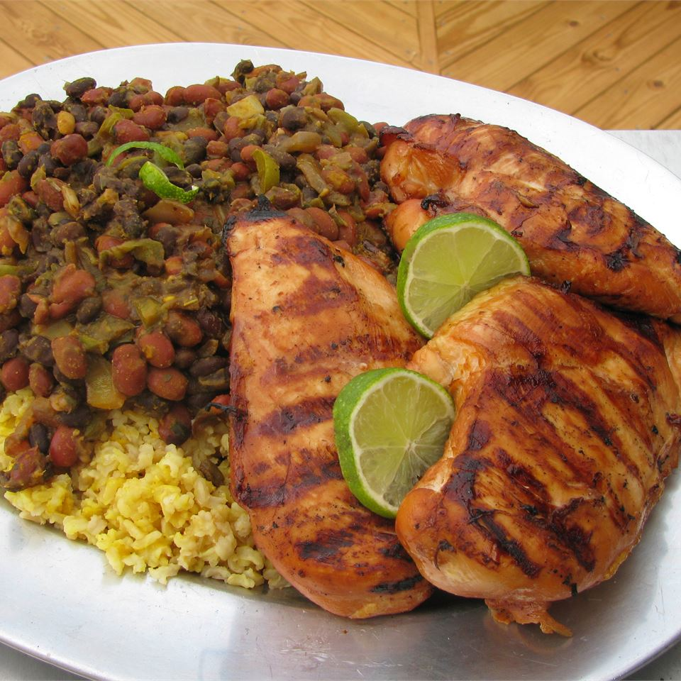

Margarita Grilled Shrimp

This recipe from the Florida Keys has been given to almost everyone I know.
It is the best marinade for chicken, and it only takes 30 minutes from prep till you can grill! It's a great blend of flavors with honey, soy sauce, and lime juice.
If you have time, try marinating overnight for the fullest flavor.
- 3 tablespoons soy sauce
- 1 tablespoon honey
- 1 tablespoon vegetable oil
- 1 teaspoon lime juice
- 1 teaspoon chopped garlic
- 4 skinless, bonless chicken breast halves
- In a shallow container, blend soy sauce, honey, vegetable oil, lime juice, and garlic.
Place chicken breast halves into the mixture, and turn to coat. Cover, and marinate in the refrigerator at least 30 minutes.
- Preheat an outdoor grill for high heat.
- Lightly oil the grill grate. Discard marinade, and grill chicken 6 to 8 minutes on each side, until juices run clear.
Return to menu